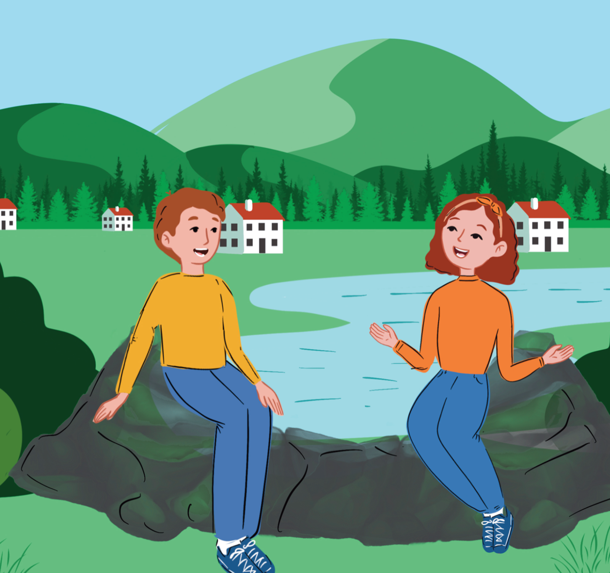

Resurset dhe trashëgimia e vendit tim
Shfrytëzimi i pasurive mbitokësore
Situata 1.
Një ditë Rona dhe Miri kishin mësuar për pasuritë mbitokësore të Kosovës. Për shkak se ishte shumë i lodhur, Miri nuk e kishte kuptuar shumë mirë këtë mësim.
- Jo! Nuk arrij ta kuptoj dot! Rona, a mund të m’i përmendësh edhe një herë disa shembuj?
- Po, sigurisht. Pasuritë mbitokësore janë të gjitha pasuritë që gjenden mbi sipërfaqen e tokës. Pjesa më e madhe e tokës në Kosovë, më tepër se gjysma e saj, është tokë e punueshme, nga e cila mundësohet zhvillimi i bujqësisë. Pjesa tjetër është tokë pyjore me malet më të njohura që janë: Bjeshkët e Nemuna, malet e Sharrit, malet e Pashtrikut e shumë male të tjera.
- Rona, më duket se përveç tokave, përmendëm edhe faktorë të tjerë që pasurojnë vendin tonë.
- Po, pasuri tjetër është edhe druri. Është shumë e rëndësishme që prerja e drurëve të bëhet në mënyrë të kontrolluar.
- E më pas folëm për pasuritë ujore.
- Aq sa di unë, pasuritë ujore përfshijnë liqenet, lumenjtë, ujërat minerale dhe termike.
- Të lumtë, Rona!
- Cili është lumi më i gjatë nga këta që përmende?
- Drini i Bardhë.
- Po ujërat minerale dhe termike?
- Ujërat kryesore minerale dhe termike njihen si banja shëruese, pasi përmbajnë minerale dhe shumë njerëz gjejnë shërim në këto ujëra.
